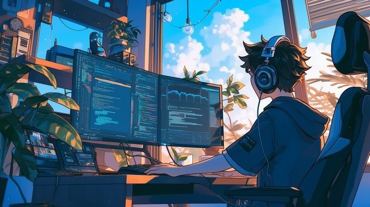

Hallo! Ik ben Bashar
Ik ben een student aan het Techniek College Rotterdam en heb een interesse in technologie en
zelfontwikkeling.
In mijn vrije tijd geniet ik van het leren van programmeertalen en het kijken naar anime
en
series.
Daarnaast ben ik vaak onderweg met mijn fiets en houd ik van series en het leren van nieuwe talen.
Over Mij
Mijn Interesses
Ik geniet ervan om in mijn vrije tijd films, series en anime te kijken. Ook leer ik graag nieuwe dingen, zoals programmeertalen of zelfs iets simpels als koken.
Mijn Dag
Mijn dagen zijn een mix van studie en ontspanning. Ik besteed tijd aan schoolprojecten, leer zelfstandig nieuwe dingen online, en neem pauzes met het kijken van een film of serie. Balans tussen leren en genieten is voor mij belangrijk.
Mijn Doelen
Ik wil mijn opleiding succesvol afronden en mezelf blijven ontwikkelen in de digitale wereld, en een baan te vinden die bij mijn interesses en vaardigheden past.